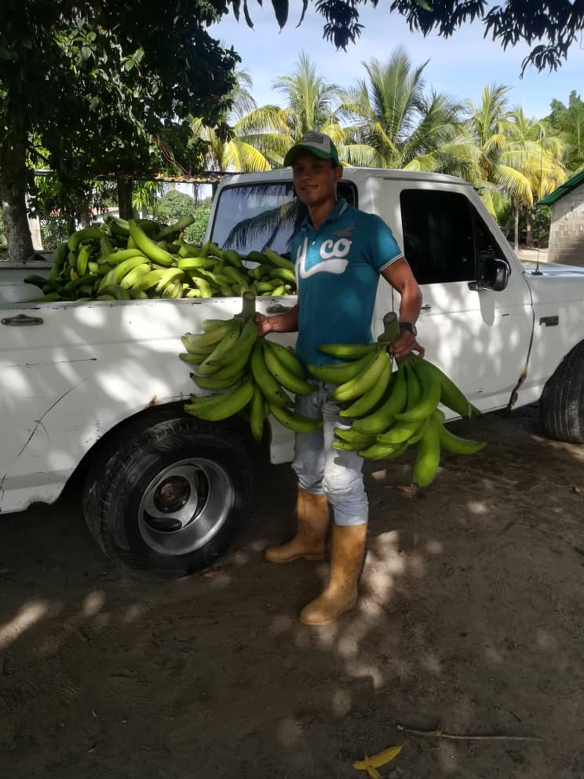

<div class="container marketing">
  
    <div class="row featurette">
        <div class="col-md-7">
          <h2 class="featurette-heading tutulo">NUESTRA CORPORACIÓN.</h2>
          <p class="lead text-justify">
            Venezuela es un país muy rico ya que cuenta con suelos fértiles gracias a la calidad de su tierra, al clima tropical que tenemos, por eso podemos dar frutos que pueden ser competitivos con cualquier producto en el extranjero relacionado al plátano. Venezuela cuenta con una ubicación geográfica privilegiada y una excelente mano de obra culturalmente dedicada a la agricultura, por ende esta última es una de sus mayores fortalezas, la suma de estos factores da como resultado un cultivo de plátano de excelente calidad.Venezuela a través del tiempo ha llegado a ser un gran exportador de este fruto, hoy en día hacia EL SUR DEL LAGO DE MARACAIBO existen UNAS SESENTA MIL (60.000) HECTÁREAS destinadas a la plantación de esta planta herbácea. </p>
            
            <p class="lead text-justify">En cuanto a la siembra y cosecha de esta planta, se llevan a cabo bajo los más rigurosos estándares de calidad regidos bajo normas de seguridad e higiene en pro del ambiente. Razón por la cual SE CONSTITUYE EN UNA DE LAS ZONAS MAS INFLUYENTES EN LO QUE CONCIERNE AL CULTIVO DE PLATANO DEL MUNDO.</p>

            <p class="lead text-justify">
              Venezuela es un país muy rico ya que cuenta con suelos fértiles gracias a la calidad de su tierra, al clima tropical que tenemos, por eso podemos dar frutos que pueden ser competitivos con cualquier producto en el extranjero relacionado al plátano. Venezuela cuenta con una ubicación geográfica privilegiada y una excelente mano de obra culturalmente dedicada a la agricultura, por ende esta última es una de sus mayores fortalezas, la suma de estos factores da como resultado un cultivo de plátano de excelente calidad. Venezuela a través del tiempo ha llegado a ser un gran exportador de este fruto, hoy en día hacia EL SUR DEL LAGO DE MARACAIBO existen UNAS SESENTA MIL (60.000) HECTÁREAS destinadas a la plantación de esta planta herbácea. En cuanto a la siembra y cosecha de esta planta, se llevan a cabo bajo los más rigurosos estándares de calidad regidos bajo normas de seguridad e higiene en pro del ambiente. Razón por la cual SE CONSTITUYE EN UNA DE LAS ZONAS MAS INFLUYENTES EN LO QUE CONCIERNE AL CULTIVO DE PLATANO DEL MUNDO.</p>

              <p class="lead text-justify">
                El producto final llega a las manos del consumidor gracias a una mano de obra 100% venezolana, atacando una problemática adicional que es el desempleo, gracias a que por los factores antes mencionados el cultivo de este fruto es constante durante todo el año. Desde el punto de e vista economico en Venezuela el plátano es uno de los productos agrícolas más representativos a nivel nacional siendo así esta una oportunidad para que sea así mismo a nivel internacional y convertir esta marca en una de las más reconocidas a nivel mundial.</p>
        </div>

        <div class="col-md-5 order-md-3">
            <br><br><br><br><br><br>
            </img>
          </div>
      </div>
  

</div>
